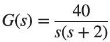
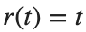

Compensator Design
English translation
Execution conditions
MATLAB · Control System Toolbox
Learning objectives
Decide whether to adjust lead or lag compensation when speed, damping, and steady-state error must be met together.
Baseline plant and lead design point
Starting conditions

. Targets: , rad/s.Procedure
- Calculate the real and imaginary parts of the target complex poles and mark them on the root locus.
- Choose the lead compensator's zero and pole, calculate its gain using the angle and magnitude conditions at the target point, and write the compensator expression.
- Calculate the distance between the selected point and the actual closed-loop pole.
Results to retain
- The target point, root-locus plots before and after compensation, and 1 compensator expression.
s=tf('s'); G=40/(s*(s+2)); zeta=.4; wn=10;
p_desired=-zeta*wn+1i*wn*sqrt(1-zeta^2); disp(p_desired);
% TODO: Choose the zero and pole using the angle condition, and calculate the gain using the magnitude condition.
Record results and self-check
Design item | |
Target value | |
Calculated or selected value | |
Difference |
Points to check
- Did you distinguish pole and zero coordinate signs from compensator coefficient signs?
- Did you record the approximation error of the gain selected by grid search?
Checking design objectives with metrics
Starting conditions
Apply a unit step and unit ramp to baseline G and the compensated model from Activity 1. Use 0~5 s and 0~20 s, respectively.
Procedure
- Apply the same unit step and unit ramp to the compensator from Activity 1 and the uncompensated model. Use 0–5 s for the step and 0–20 s for the ramp.
- Find step overshoot and settling time. For the ramp, plot , obtained by subtracting the output from

. Record the final-sample error for each model. - Find from the loop transfer function to calculate , and record its absolute difference from the final ramp error above. Using the table values, explain which aspects of response speed and final error improved or worsened after compensation.


Results to retain
- 1 step plot, a ramp plot, and a performance table.
s=tf('s'); G=40/(s*(s+2)); t=linspace(0,20,4001)'; r=t;
% TODO: Use C designed in Activity 1 to obtain the ramp response of feedback(C*G,1).
Record results and self-check
Model | |
Overshoot [%] | |
Settling Time [s] | |
Kv | |
Late ramp error |
Points to check
- Did you use an interval where the ramp error had become sufficiently constant?
- Did you compare the compensated and uncompensated systems using the same inputs and metrics?
Repeating the design for a different target
Starting conditions
For the same G, change the target to (ζ,ωn)=(.5,8), or follow the procedure in the first ‘Phase-lag compensator using root locus’ section of W12_CompensatorDesign.ipynb (conditions , , starting code Kv_desired=20) to target . Choose either option.
Procedure
- First state the changed target and the fixed plant.
- Create a new compensator and performance table in the same format.
- Summarize the metrics achieved and those sacrificed in no more than 5 sentences.
Results to retain
- A comparison table of 2 designs and result plots.
s=tf('s'); G=40/(s*(s+2));
% TODO: Define the selected new design target as variables and repeat the design.
Record results and self-check
Design | |
Objective | |
Compensator expression | |
Achieved value | |
Metrics that changed together |
Points to check
- Did you avoid reusing the old compensator as your result after changing the target?
- Did you also record unmet targets with their actual values?